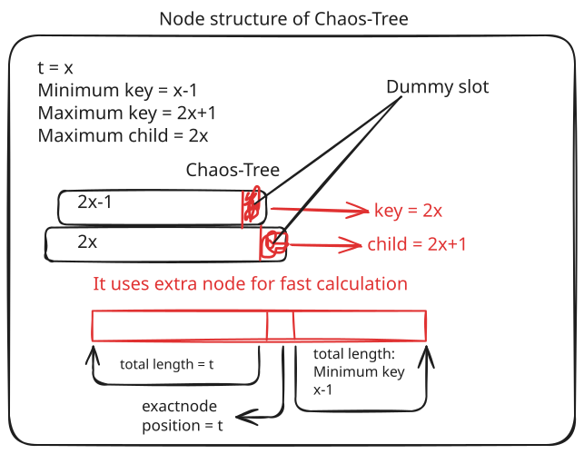

ChaosTree diverges from textbook CLRS (Cormen, Leiserson, Rivest, and Stein) implementations to extract maximum mechanical sympathy from the Java Virtual Machine (JVM). This document details the array capacity mathematics, the Structure-of-Arrays (SoA) layout, and the crucial differences between the BTreeMap and BPlusTreeMap engines.

Standard B-Tree and B+-Tree literature defines a node capacity based on a degree parameter t (where t ≥ 2).
Textbook CLRS defines the maximum number of keys in a node as maxKeys = 2t - 1.
In ChaosTree, maxKeys is indeed 2t - 1, but the physical arrays are allocated to size 2t.
int maxKeys = degree << 1; // 2t physical slots allocated this.keys = new Object[maxKeys];
This creates a dummy slot (or overflow slot) as illustrated in the SVG diagram above. By allocating one extra slot beyond the legal mathematical maximum, ChaosTree can use an insert-then-split architecture instead of the traditional split-then-insert.
Traditional (Preemptive): If node is full (2t-1), split it. Then figure out which half the new key belongs to, and insert it.
ChaosTree (Overflow): Unconditionally insert the key. The node temporarily holds 2t keys. Then,while (current.keyCount > maxKeys), split the node and push the separator up.
This completely eliminates the need to branch or reason about pending keys during a split, removing complex control flow from the JIT hot-path.
Standard Java implementations like java.util.TreeMap use a Structure-of-Objects layout. Every node is an Entry<K,V> that holds pointers to left, right, parent, color, key, and value. Binary searching forces the CPU to drag values and node pointers through the CPU cache line.
ChaosTree uses Structure of Arrays (SoA):
protected final Object[] keys; protected final Object[] values; protected final N[] child;
When ChaosTree searches a node, it runs a binary search exclusively over the keys[] array. The CPU can fetch consecutive keys in a single L2 cache line without touching a single value or child pointer.
A classical B-Tree stores values in both internal routing nodes and leaf nodes. A B+-Tree pushes all values down to the leaf nodes, leaving internal nodes strictly as a routing index.
ChaosTree leverages this mathematical distinction to ruthlessly optimize Garbage Collection retention:
| Tree Type | Leaf Node Arrays | Internal Node Arrays |
|---|---|---|
| BTreeMap | keys[], values[] |
keys[], values[], child[] |
| BPlusTreeMap | keys[], values[] |
keys[], null, child[] |
boolean needsValues = isLeaf || (this instanceof BTreeMapNode); this.values = needsValues ? new Object[maxKeys] : null;
Because internal nodes account for roughly 1/t of the total tree volume, dropping the values[] array entirely in BPlusTreeMap saves a massive amount of heap space. During a top-down bulk load of 10,000 elements, this GC optimization causes BPlusTreeMap to generate just 119 KB of allocation compared to BTreeMap's 519 KB.
ChaosTree's buildFromSorted eliminates the "Phase 2" repair pass found in standard database bulk-loaders by computing exact capacity windows before descending.
B-Tree capacity bound: (numKeys + 1) / maxChildh ≤ Children ≤ (numKeys + 1) / minChildh
B+-Tree capacity bound: maxSubtree = maxKeys * maxChildh-1
By proving that C (the chosen number of children) fits within the clamped window, ChaosTree guarantees every child will land inside its legal [minKeys, maxKeys] boundary before the recursion even reaches it. The remainder is smeared uniformly (1 per child) to bound the worst-case sibling imbalance at exactly 1 key. This makes underflow mathematically impossible and fully eliminates the need for a secondary tree-repair traversal.